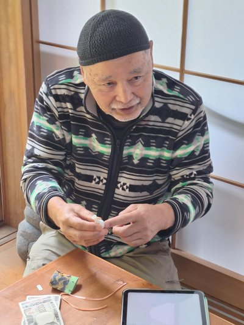

Thank You, Mary
In ceramics, so much depends on the people who carry things — literally. Who drives the extra miles, packs the extra box, says yes when they could just as easily not. Mary Fritz is one of those people.
In 2025, Mary was doing döstädning — Swedish death cleaning — thinning out her studio at Red Cedar. She sold me her full stock of raw materials for a thousand dollars. Glazes, oxides, clay — all of it. That alone would've been enough to be grateful for.
But then she bought about twenty of my translucent porcelain miniatures. Not for herself — for Japan. She was heading to the Six Ancient Kilns, the Rokkoyō, and she wanted to bring gifts for the potters she'd meet along the way.
She carried my work across the Pacific and placed it in the hands of people I may never meet — potters working in traditions that stretch back eight hundred years. She visited all six:
- Seto瀬戸Where she visited Shingo Takeuchi and gave him one of my pieces
- Tokoname常滑Red clay teapots, pottery tradition since the 12th century
- Echizen越前Unglazed stoneware, centuries of ash and wood fire
- Shigaraki信楽Earthy tea wares, natural ash glazes, warm orange clay
- Tamba丹波Climbing kilns, 60-hour firings, each piece marked by flame
- Bizen備前No glaze, no slip — beauty from flame, ash, and kiln placement alone
In Seto, she met Shingo Takeuchi.
Takeuchi was born in 1955 in Seto — the city so synonymous with ceramics in Japan that the Japanese word for pottery, setomono, literally means "things from Seto." He didn't start as a potter. He worked for a Japanese car company first. But the clay pulled him back. He trained at the Aichi Kiln Training School, studied under the master Kato ShunTei II, and opened his own studio in Seto in 1982. He's been there ever since.
His work is sekki — high-fired stoneware — and iron-zogan, a technique of iron inlay. He hand-builds sculptural vessels with no glaze at all. The surfaces develop subtle reds, teals, and blues just from the clay and the fire. Intertwined, multi-faceted forms that look like they grew rather than were made.
He's exhibited at Dai Ichi Arts and Cavin-Morris Gallery in New York, Officine Saffi in Milan, Terra Delft in the Netherlands, galleries in Sydney. He won the Special Prize at the World Ceramic Biennale Korea in 2005. He's an IAC member. He came to NCECA in Las Vegas back in 1997. Since 2001, he's run an artist-in-residence program at his Seto studio — welcoming potters from around the world into the same tradition he inherited.
Mary handed him one of my little translucent porcelain miniatures.

Seto, Japan · December 2025 · Photo by Mary Fritz
This man — who left a career in engineering to follow the clay, who trained under masters, who's shown his work in galleries on four continents, who's spent forty years building sculptures from fire and iron — is sitting in his studio in the city that gave pottery its name, holding a tiny translucent piece from a potter in Michigan he's never met.
Because Mary Fritz put it in her suitcase and carried it across the Pacific.
That's lineage. Not the kind that goes back through generations of teachers and students. The kind that happens sideways — when someone decides your work deserves to travel further than you can take it yourself.
And there's another thing. Mary's husband — an engineer — filed the paperwork to bring NCECA 2026 to Detroit. The largest ceramics conference in North America, in my home state, because someone in Williamston did the work to make it happen.
The same household that carried my pieces to Japan's ancient kilns is the reason the whole ceramics world is coming to Michigan this March.
Mary creates hand-built functional and sculptural pieces — flora, fauna, mother earth imagery. Stories of discovery, absurdity, loss, humor. She highlights the whimsy of natural processes and the interconnectedness of all living beings. Her work is about conservation in every sense of the word.
She hosts Red Cedar Studio as part of the Cracked Pot Studio Tour — a self-guided driving tour of local pottery studios showcasing more than 50 ceramic artists across mid-Michigan. You can find more of her work at maryfritz.com.
This page lives on Stull Atlas — the glaze chemistry platform I've been building. Over 9,000 glazes mapped on a Stull chart, a community directory of ceramic artists, and a lineage map showing how potters connect across generations and continents. You're part of that story now, Mary. This page is your spot in it.
— Ryan Lack, 2025